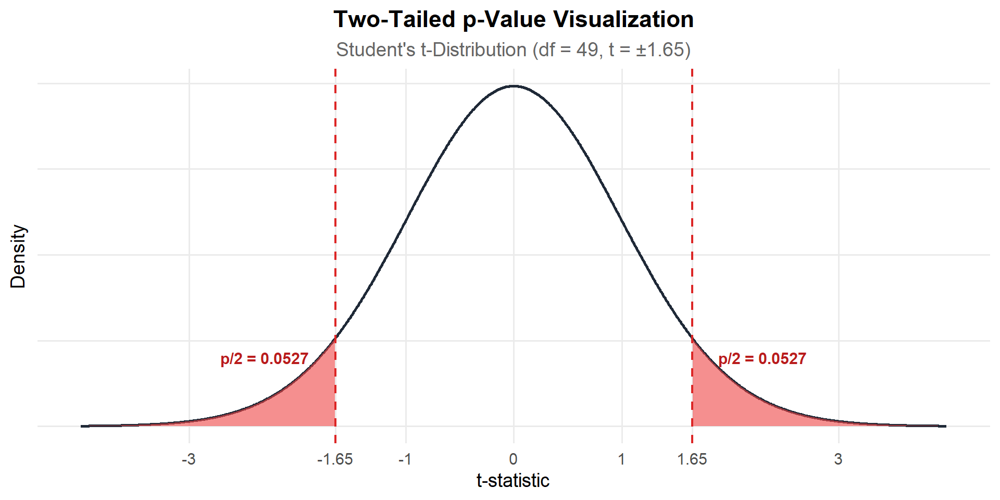
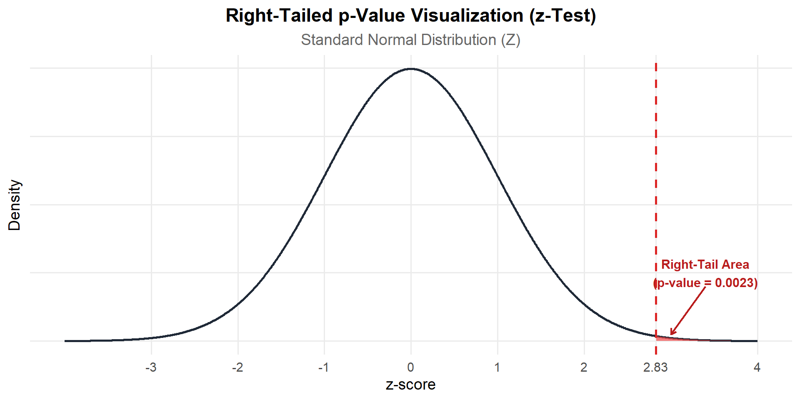

Lecture 3
2026-08-25
– Review Test (8/27)
– Do you have access to the required textbook?
– Do you understand how/where to get help in ST312?
– Do you have plan to take notes?
– Normal Distribution: probabilities, z-scores, z-table (1.4)
– Sampling Distribution: for sample means (5.2), sample proportions (5.3)
– Confidence Intervals (6.1): for 1-sample mean (7.1), 1-sample proportion (8.1)
– Hypothesis Testing (6.2): for 1-sample mean (7.1), 1-sample proportion (8.1)
– P-values (6.2)
– Multiple Choice Questions
– T/F Questions
– Short Answer Questions
Closed notes. Please bring a calculator.
– Day-2/3 of lecture
– My posted material
– Hammrick’s posted review questions
– Sections of the book (see previous slide)
– What is a null hypothesis?
– What is an alternative hypothesis?
A health researcher wants to test whether college students at a local university drink a different amount of water daily compared to the national average. Health guidelines estimate that the national average daily water intake for young adults is 2000 mL.
The researcher selects a simple random sample of \(n = 50\) students from the campus library and records their daily water consumption in milliliters (mL). You want to investigate if students at this particular college are different than the national average. Assume that \(\bar{x}\) = 2035mL, and \(s\) = 150mL
\(Ho: \mu = 2000\)
\(Ha: \mu > 2000\)
What is \(\mu\) in the context of the problem?
We use a Z-distribution (standard normal) when:
– Working with a categorical response (single proportion test)
– When \(\sigma\) is known (almost never)
We use a t-distribution when:
– Working with a quantitative response (single mean test)
Let’s talk about the t-distribution!
– There are \(\infty\) many t-distributions
– For lower degrees of freedom, t-distributions have fatter tails
– degrees of freedom (that help control the shape) are calculated as n-1
–Notation: \(t_49\) implies a t-distribution with 49 degrees of freedom
How do we conduct a t-test?
\(Ho: \mu = 2000\)
\(Ha: \mu \neq 2000\)
\(n = 50\)
\(\bar{x}\) = 2035mL
\(s\) = 150mL
\(df = 49\)
Calculate our test statistic using the following formula.
\[t = \frac{\bar{x} - \mu_0}{\frac{s}{\sqrt{n}}}\]
\[t = \frac{\bar{x} - \mu_0}{\frac{s}{\sqrt{n}}}\]
\[t = \frac{2035 - 2000}{\frac{150}{\sqrt{50}}}\]
\[t = \frac{35}{\frac{150}{7.07107}}\]
\[t = \frac{35}{21.2132}\]
\[t \approx 1.65\]
How do we interpret this number?
\[t \approx 1.65\]
2035 \((\bar{x})\) is 1.65 standard errors away from the null value 2000!
\[t \approx 1.65\]
2035 \((\bar{x})\) is 1.65 standard errors away from the null value 2000!
The probability of observing our statistic, or something more extreme, given the null hypothesis is true.
The probability of observing our STATISTIC, or something MORE EXTREME, given the NULL HYPOTHESIS IS TRUE.
– What is our statistic?
– What does more extreme mean?
– What is our null hypothesis?
The probability of observing a mean of 2035, or something more extreme, given the population mean of water intake for young adults is 2000 mL.
So, what does this look like?

The probability of observing a mean of 2035, or something more extreme, given the population mean of water intake for young adults is 2000 mL, is about 10.53%.
This allows us to write a decision and conclusion about our research study!
In fixed level testing, you often set a \(\alpha\) prior to conducting your study.
What is \(\alpha\)?
– significance level
– Type I error rate
– Tool we use to compare our p-value to, and see if we have enough evidence to reject or fail to reject the null hypothesis!
Probability that we reject the null hypothesis, given the null hypothesis is actually true!
We don’t know if we make a Type-1 error in practice, but this is the probability that we do!
Typically \(\alpha\) is 0.01, 0.05, or 0.10.
Often depends on the field you work in.
Fisher (famous statistician) suggested that 5% was a convenient cutoff for judging whether results were unusual under the null hypothesis.
\(\alpha\) is often chosen based on the consequences of making an error.
\(\alpha\) = 0.05 p-value ~ .1053
We always always always write decisions in the context of the null hypothesis!
\(Ho: \mu = 2000\)
What would be our decision in this context?
We always always always write conclusions in the context of the alternative hypothesis!
\(Ho: \mu \neq 2000\)
What would our conclusion be?
– \(\pi\) instead of \(\mu\)
– z-test instead of a t-test
– different test-statistic (z instead of t)
– different distribution (standard normal instead of t-distribution)
p-values, decisions, conclusions, etc. follow the same rules!
A health researcher wants to test whether college students at a local university drink a different amount of water daily compared to the national average. Health guidelines estimate that the national average daily water intake for young adults is 2000 mL.
The researcher selects a simple random sample of \(n = 50\) students from the campus library and records their daily water consumption in milliliters (mL). You want to investigate if students at this particular college are different than the national average. Assume that \(\bar{x}\) = 2035mL, and \(s\) = 150mL
How could we change this question if I wanted to make a confidence interval instead of performing a hypothesis test?
estimate
A health researcher wants to test whether college students at a local university drink a different amount of water daily compared to the national average. Health guidelines estimate that the national average daily water intake for young adults is 2000 mL.
The researcher selects a simple random sample of \(n = 50\) students from the campus library and records their daily water consumption in milliliters (mL). We want to estimate the population mean water consumption for these students on campus.
You may use 2.01 for \(t^*\). Calculate a 95% confidence interval using the formula below.
\[\bar{x} \pm t^* \cdot \left( \frac{s}{\sqrt{n}} \right)\]
\[\bar{x} \pm t^* \cdot \left( \frac{s}{\sqrt{n}} \right)\]
\[2035 \pm 2.010 \cdot \left( \frac{150}{\sqrt{50}} \right)\]
\[2035 \pm 2.010 \cdot (21.2132)\]
\[2035 \pm 42.64\]
\[(1992.36\text{ mL},\ 2077.64\text{ mL})\]
how do we interpret this?
– Go through single proportion
– Talk about z-scores vs test statistics
A health researcher wants to see if more than half of college students are drinking water. In a sample size of \(n = 50\), the researcher recorded that 35 students drink more than 1 bottle of water a day.
What’s different than before?
What’s the null and alternative hypothesis?
What type of test are we doing?
\(Ho: \pi = .5\)
\(Ha: \pi > .5\)
We are going to conduct a z-test, because our response variable is categorical!
\[{SE(\bar{x})} = \frac{s}{\sqrt{n}}\]
\[\text{Sample Standard Deviation } (s) = \sqrt{\frac{\sum (x_i - \bar{x})^2}{n - 1}}\]
vs
\[SE({\hat{p})} = \sqrt{\frac{\hat{p}(1-\hat{p})}{n}}\]
\[{SE(p_o)} = \sqrt{\frac{p_0(1 - p_0)}{n}}\]
Because we know the standard error when we calculate our statistic \(\hat{p}\), we are justified to do a z-test and a standard normal distribution.
\[z = \frac{\hat{p} - p_0}{\sqrt{\frac{p_0(1 - p_0)}{n}}}\]
\[\hat{p} \pm z^* \cdot \sqrt{\frac{\hat{p}(1 - \hat{p})}{n}}\]
Hypothesis test:
\[n p_0 \ge 10 \quad \text{and} \quad n (1 - p_0) \ge 10\]
Confidence interval:
\[n \hat{p} \ge 10 \quad \text{and} \quad n (1 - \hat{p}) \ge 10\]
\[z = \frac{\hat{p} - p_0}{\sqrt{\frac{p_0(1 - p_0)}{n}}}\]
\[z = \frac{0.70 - 0.50}{\sqrt{\frac{0.50(1 - 0.50)}{50}}}\]
\[z = \frac{0.20}{\sqrt{\frac{0.25}{50}}}\]
\[z = \frac{0.20}{\sqrt{0.005}}\]
\[z = \frac{0.20}{0.07071}\]
\[z \approx 2.83\]
Draw out how the p-value would be calculated.

\[\hat{p} \pm z^* \cdot \sqrt{\frac{\hat{p}(1 - \hat{p})}{n}}\]
\[\hat{p} \pm z^* \cdot \sqrt{\frac{\hat{p}(1 - \hat{p})}{n}}\]
\[0.70 \pm 1.96 \cdot \sqrt{\frac{0.70(1 - 0.70)}{50}}\]
\[0.70 \pm 1.96 \cdot \sqrt{\frac{0.70(0.30)}{50}}\]
\[0.70 \pm 1.96 \cdot \sqrt{\frac{0.21}{50}}\]
\[0.70 \pm 1.96 \cdot \sqrt{0.0042}\]
\[0.70 \pm 1.96 \cdot (0.06481)\]
\[0.70 \pm 0.1270\]
\[(0.5730,\ 0.8270) \quad \text{or} \quad (57.30\%,\ 82.70\%)\]
A z-score describes an individual observation, while a test statistic is used to test a hypothesis about a population.
Z-score:
\[z = \frac{x-\mu}{\sigma}\]
T-statistic:
\[t = \frac{\bar{x}-\mu_0}{s/\sqrt{n}}\]
A z-score can answer questions like:
“How unusual is this individual observation compared with the population?”
Suppose the average wait time at a coffee shop is 5 minutes, with a standard deviation of 1.5 minutes.
You wait 9 minutes.
How unusual is an 8-minute wait compared with the typical wait?
\[ z = \frac{x-\mu}{\sigma} = \frac{9-5}{1.5} = \frac{4}{1.5} \approx 2.67 \]
So, a 9-minute wait is approximately 2.67 standard deviations above the mean.
And this is unusual! Anything above 2 SDs above the mean is considered unlikely. Think back to the emperical rule :).
We also often calculate z-scores to compare between each other.
Suppose the average wait time at a coffee shop is 5 minutes, with a standard deviation of 1.5 minutes. You wait 9 minutes.
You then go to a second coffee shop. The average wait time at the second coffee shop is 8 mintes, with a standard deviation of 3 minutes. You wait 11.5 minutes. Which is more unlikely?
Coffee Shop 1
\[ z_1 = \frac{9-5}{1.5} = \frac{4}{1.5} \approx 2.67 \]
Coffee Shop 2
\[ z_2 = \frac{11.5-8}{3} = \frac{3.5}{3} \approx 1.17 \]
Since \(2.67 > 1.17\), the 9-minute wait at Coffee Shop 1 is more unlikely.